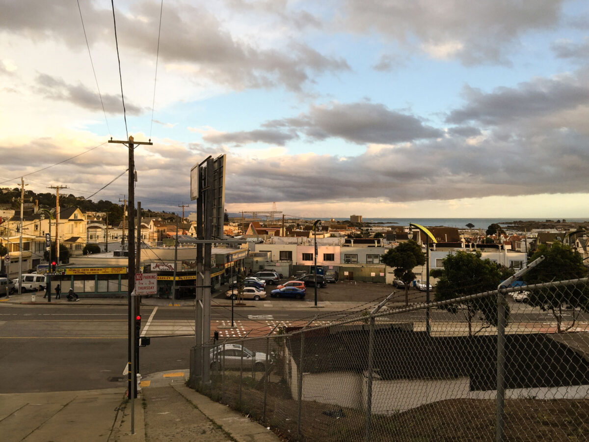

Are we screwed? The truth about climate tipping points.
Hosts Allie Skalnik and Zoe Colloredo-Mansfeld interview Stanford’s top climate experts about climate tipping points. Why do we use the term? What do we mean? And most importantly: Are we screwed?
Note: This 40-minute episode has been edited to ~15 minutes for portfolio purposes.